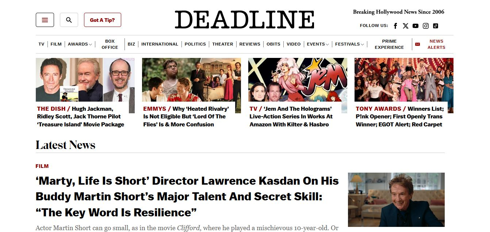
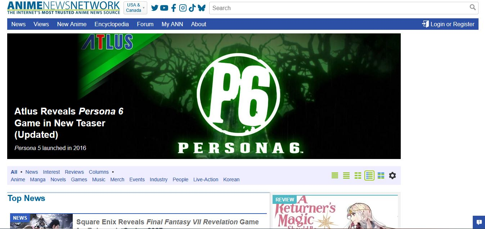

Everyday we frequently visit different or the same websites but have you ever stopped to wonder why these sites that you frequent daily are so visually appealing? If so, you're in luck, because this article is going to demonstrate the role typography plays in two different websites by comparing them. Typography can be defined as the study of how fonts and text are used in design and how they affect the overall look and feel of a visual design.
The two websites that will be compared are Deadline and AnimeNewsNetwork let's get started!
Deadline 
AnimeNewsNetwork

Both websites make excellent use of whitespace because visually the text on both websites is easy on the eyes and clear to read. Whitespace can be defined as the areas on the page that have blank space or are unmarked. The use of whitespace helps to create clear focal points that helps direct the eye's attention. There's also a good use of contrast in terms of the background color that's used and the text present on the page between the two websites. Furthermore, both websites employ a F Layout on their pages. The F Layout design of a page follows the natural way that most people read in the Western world which is from left to right. It's a great layout for websites or articles that tend to have a large amount of text content.In conclusion, both websites make excellent use of typography principales to create visually appealing website designs.